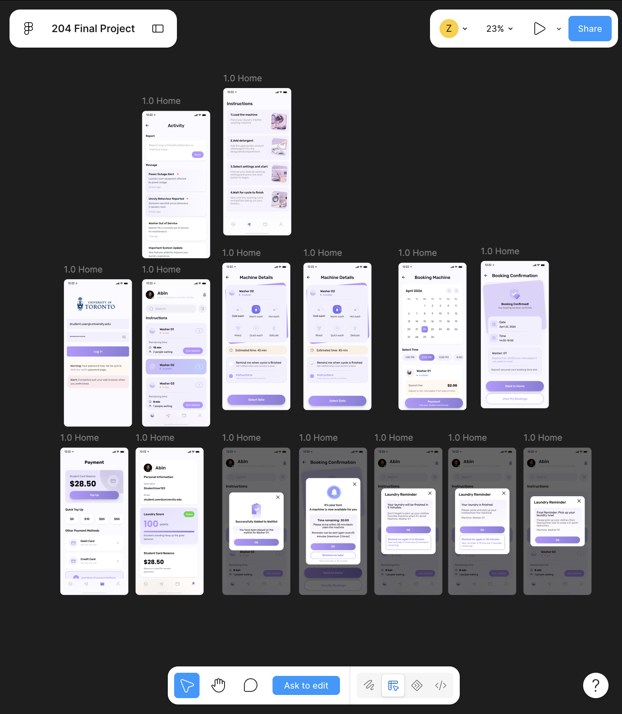

Project Overview
I worked on the School Laundry App Project for CCT204. Through this project, I learned how to use Figma to design app interfaces and explored the relationship between user experience and visual design.
This project encouraged me to consider how students would understand the interface and move between different screens.

An overview of the School Laundry App interface design in Figma.
The Design Challenge
A mobile interface has limited space, so information and controls need to be arranged carefully. Students should be able to understand what a screen offers and identify their next action.
A key design challenge for this project was how to make the app's screens clear and consistent while supporting a logical navigation flow.
Design Approach
Consider the User's Perspective
I considered the interface from a student's perspective, focusing on how users would interpret information and find relevant actions.
Design Screens in Figma
I used Figma to arrange text, buttons and other interface elements. This helped me practise translating ideas into visual screen layouts.
Think About Navigation
I explored how individual screens relate to one another and how interface choices can help users understand where to go next.
Design Focus
- Clear information hierarchy to help users identify important content.
- Consistent interface elements across screens.
- Understandable labels and navigation choices.
- Layout decisions informed by the user's perspective.
What I Learned
This project helped me become more familiar with Figma and the process of designing mobile interfaces. I also developed a better understanding of how user interface design supports the overall user experience.
I learned that design decisions should consider what users need to understand and accomplish, as well as how the interface looks.
Future Improvements
In a future revision, I would ask students to try the design and explain where they feel confused. Their feedback could help me improve navigation, button labels and the clarity of each screen.